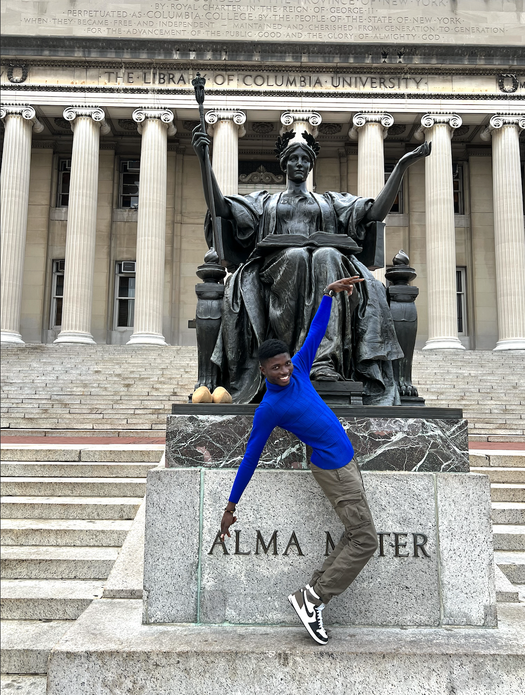
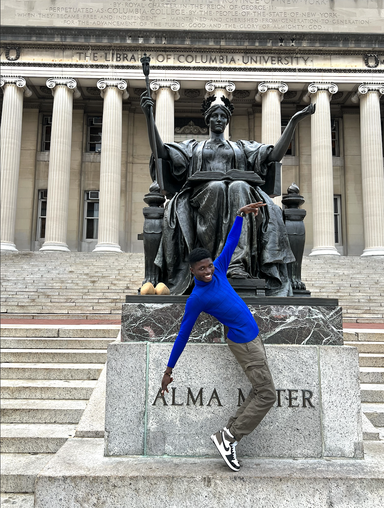
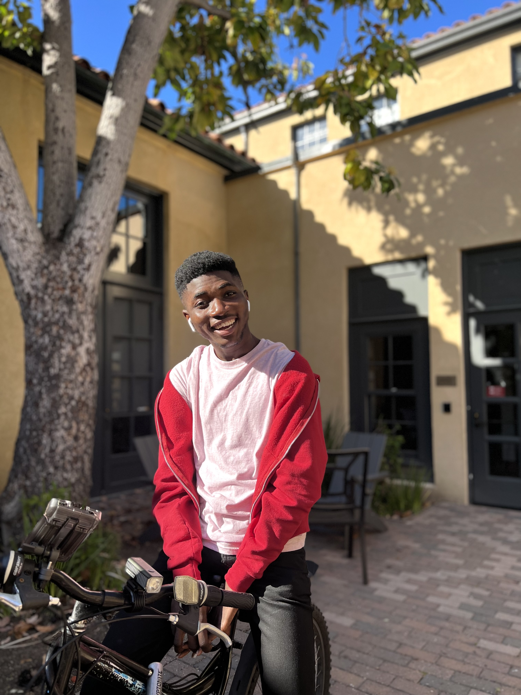
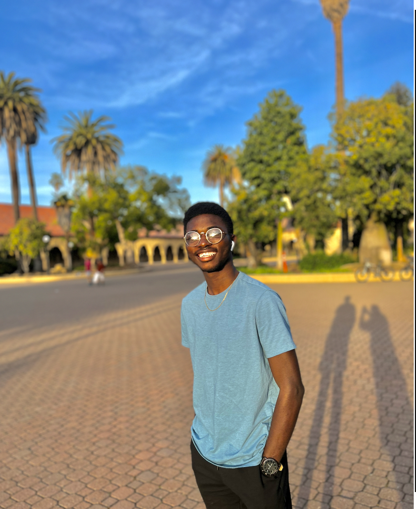
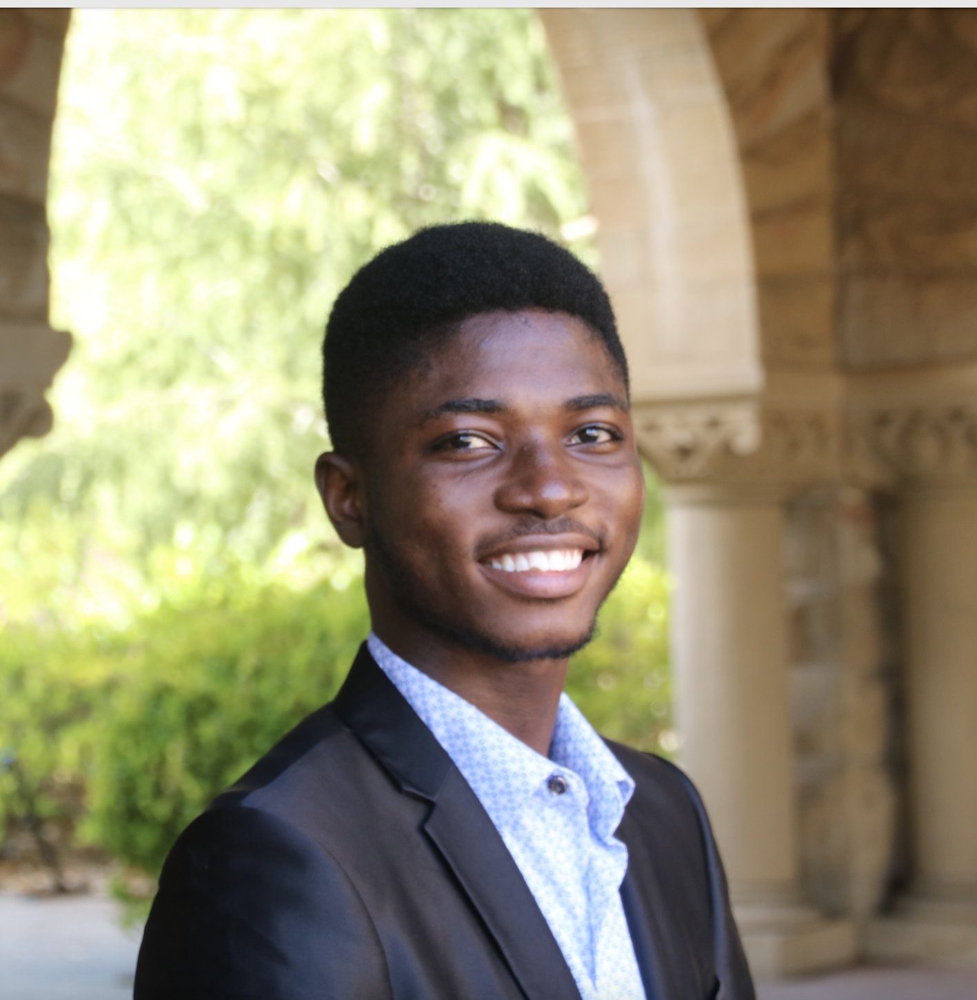
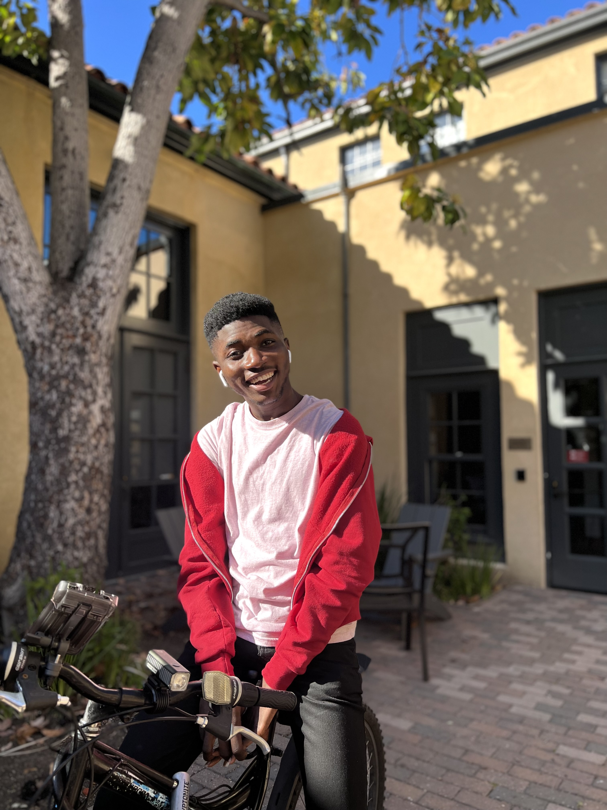
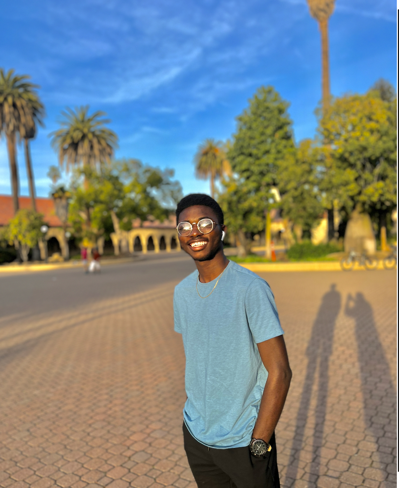
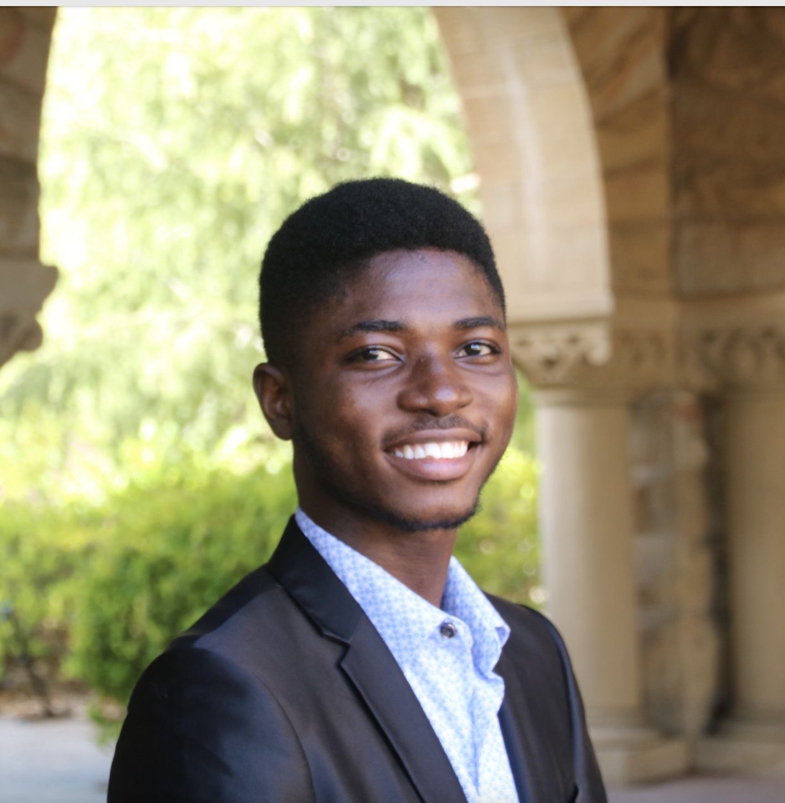

George Birikorang's Portfolio
Welcome to my space!
Photo Collection:
 

 





About Me:
George Birikorang is a freshman at Stanford University double majoring in Computer Science and Energy Resources Engineering. He comes from Ghana and is fascinated by anything computing and energy/environment related. His other interests are venture capital and astronomy. I have been the Youth Organizer for “Beginning-The-Year-Right Summit,” a business-inspired conference that draws in entrepreneurs and community locals to talk about venture-capital and financial management, since 2019. I am involved with Stanford Real Estate Club, Stanford Black Scientists and Engineers, Black in CS, Energy Club, ACM Lab, African Students Association, and currently serving as the Ambassador for USA Today Boost Business conference at Stanford University. I am a Stanford University Leland Scholar and Future Leaders Educational Empowerment Foundation National Scholar in Ghana. In his free time, he loves to dance, hang out with friends, play soccer, binge watch anime or just sleep.
Projects:
C++ Programming Project, Queues and Stacks Climate Change Rising Tides Project: Used stacks and queues to write an algorithm that predicts which geographical coastal terrains and their surrounding communities might be flooded as the water level rises due to climate change.
Programming Project, Encryption and Decryption of Consumer Data: Applied python slicing, indexing and decomposition to develop an algorithm like the “enigma code” to encrypt and decrypt information. Raised concerns about respect for privacy and the need for tech companies to implement moral ethics in computer science by encrypting consumer information.
Leland Scholar, Stanford University Leland Scholars Program: Selected as one of 60 scholars to participate in Stanford’s scholars’ program; wrote a research proposal on “Big Data Surveillance: The future of humanity” with a specific focus on how tech companies utilize consumer data and proposed solutions on ensuring data security and privacy. Click here to see my Stanford University Leland Scholar Profile.
Solar panel optimization and peneration project: Working with Stanford Black Scientists and Engineers's BYTES team and EnergieRich company to develop more efficeint solar panels with regards to Global Horizontal irradiance and automated tilting of the panel to track the sun's radiation and concentration.
Connect with me:
Connect with me on LinkedIn here
Collaborate with me on GitHub at GeorgeBiri
Click here to get a random motivational quote for the day: